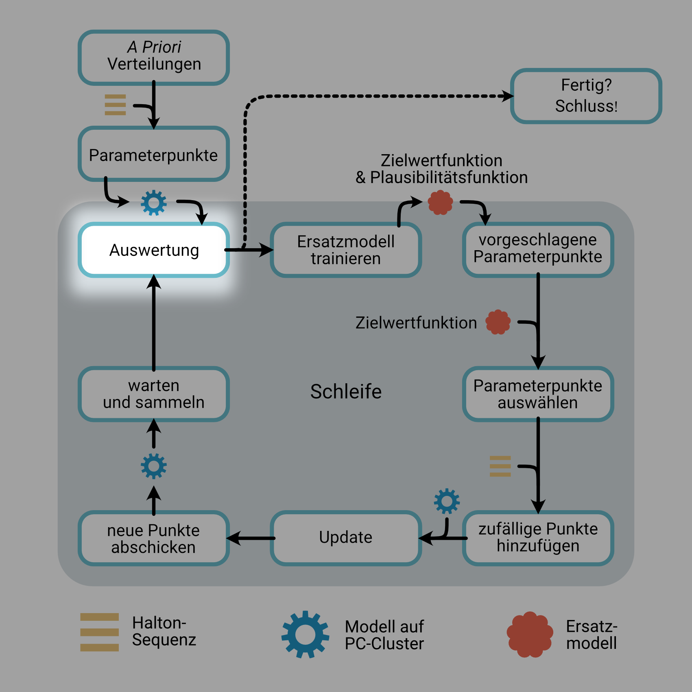
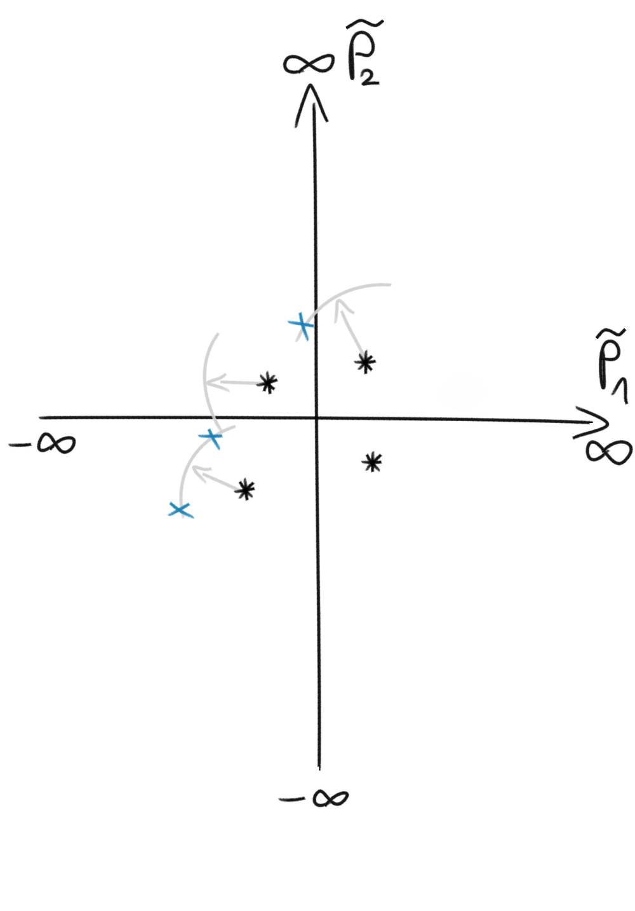
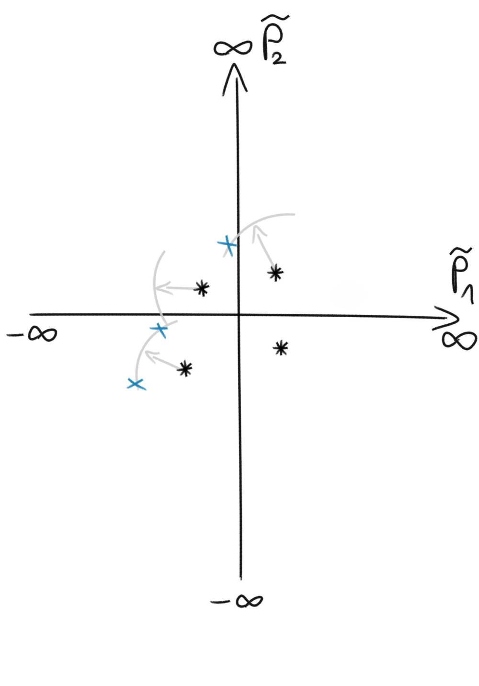
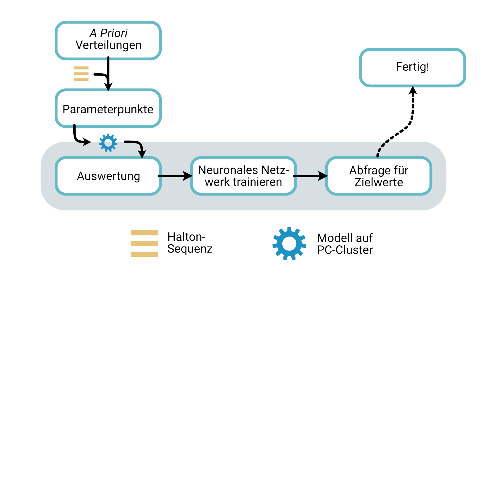
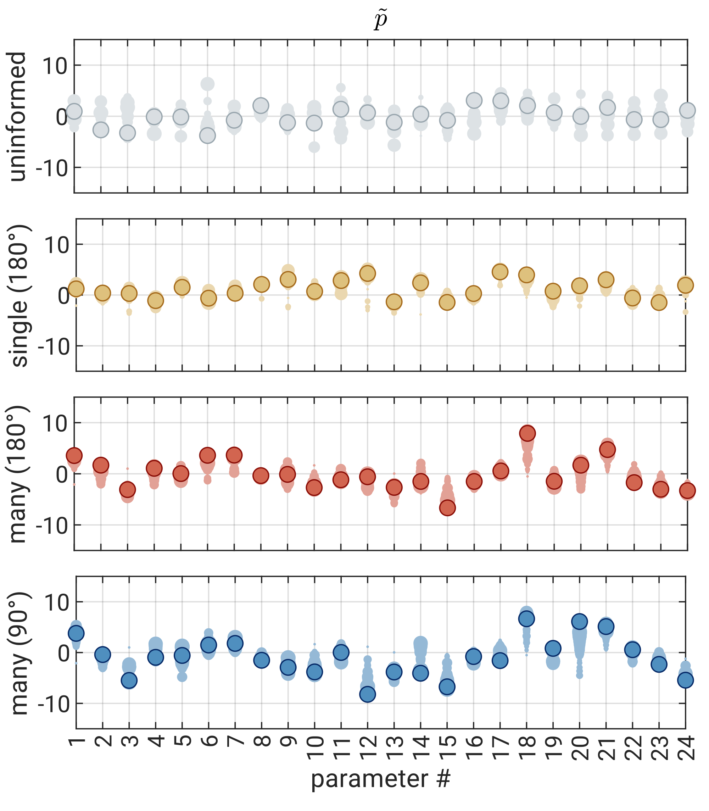

ML-basierte Ersatzmodelle
zur beschleunigten Kalibrierung und Unsicherheitsberechnung
Dr. Jonas Allgeier (BoSS Consult GmbH)
Prof. Dr.-Ing. Olaf A. Cirpka (Universität Tübingen)
Kalibrierung moderner Modelle
- moderne Modelle → viele Parameter
- Was sind die "richtigen" Werte?
- Kalibrierung
→ Modell und Messungen in Einklang bringen - automatisierte Verfahren
- schnelles Modell
- langsames Modell
- Wie trotzdem kalibrieren?
- Ersatzmodelle

Zwei Varianten
- Ziele
- Parameterwerte
- Parameterunsicherheiten
- Parameterkorrelationen
- PC-Resourcen sinnvoll nutzen
- Variante 1:
klassische Kalibrierung + Postprocessing (GPE+MCMC) - Variante 2:
direkte A Posteriori Bestimmung (SBI)

Beispiel: Ammer-Talaue
Gauß-Prozess Emulatoren als Ersatzmodelle
- GPE: Interpolationsmethode
- Eingabe
- bekannte Datenpunkte \(\boldsymbol{X}^\bullet\), \(\boldsymbol{y}^\bullet\)
- Kernel-Funktion
\(C(\boldsymbol{x}_a-\boldsymbol{x}_b,\boldsymbol{\theta}) = \theta_0 (1+\sqrt{6}d)\exp(-\sqrt{6}d)\)
\(\textstyle d = \sqrt{\sum_{i=1}^{n} \left(\frac{x_{a,i}-x_{b,i}}{\theta_i}\right)^2}\) - angepasste Koeffizienten \(\boldsymbol{\theta}\)
- Ausgabe
- Interpolationsfunktion \(y^\circ = \mu(\boldsymbol{x}^\circ)\)
- Unsicherheitsfunktion \(\sigma^2(\boldsymbol{x}^\circ)\)
- Ableitungen \(\nabla y^\circ\)


Ersatzmodelle in der Kalibrierung
- Einsatzmöglichkeiten bei klassischem Algorithmus
(z.B. nach Regis & Shoemaker, 2009) - Plausibilität im Voraus abschätzen
- Performance im Voraus abschätzen
- Richtung abschätzen
- GPE-Varianten
- GPE → Zielwertfunktion
- GPEs → einzelne Beobachtungen
- einzelner Parametersatz
- Postprocessing
- echte MCMC-Analyse mit Ersatzmodell
- vollständige A Posteriori Verteilung
- Parameterkorrelationen
- Jacobi-Matrix
- Sensitivitäten
- Vorgehensweise "NPE-C"
(nach Lueckmann et al. 2021) - A Priori Verteilung → Parametersätze \(\mathbf{\tilde{p}}\)
- mit Modell auswerten → \(\boldsymbol{\vartheta}^\bullet\)
-
neuronales Netz:
Input: Modelloutput
Output: Parameterverteilung
\(\mathbf{\Psi} = f_\mathrm{NN}(\mathbf{\Phi},\boldsymbol{\vartheta}^\bullet)\) -
Abfrage für Zielwerte
\(\mathbf{\Psi}^\ast = f_\mathrm{NN}(\mathbf{\Phi},\boldsymbol{\vartheta}^\ast)\) - ergibt direkt A Posteriori Verteilung
- keine zus. Modellläufe bzw. Kopplung nötig
- Ersatzmodelle können während der Kalibrierung vielseitig eingesetzt werden.
- Es kann sich lohnen je ein Ersatzmodell pro Beobachtung zu nutzen.
- SBI ist ein vielversprechender Ansatz (z.B. wenn nur A Priori Modellläufe zur Verfügung stehen).
- GPE+MCMC war in unserem Beispiel aber noch besser.


Parallelisierter Ansatz



 


Simulation-Based Inference



Ergebnisse


Schlussfolgerungen